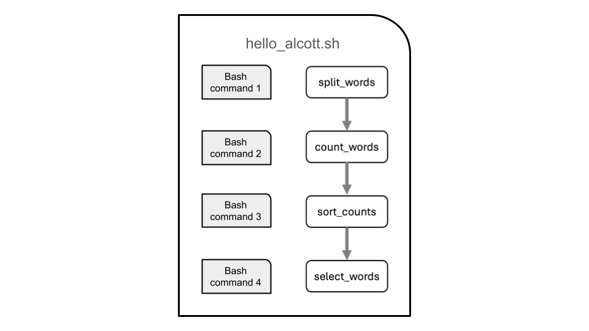

In this module, we will:
- discuss reproducible computing in general
- use a simple warm-up exercise to introduce example data and example
tasks that we’ll use to demonstrate tools and techniques for
reproducible computing
- quickly get started using UMich’s Great Lakes High-Performance
Computing (HPC) cluster
- start to get acquainted with project organization
Reproducible Computing
Reproducible computing has become increasingly important in recent
years. As experimental data volumes have increased exponentially, and as
research endeavors have employed more complicated analyses over time,
computation has become a fundamental aspect of virtually every type of
research.
Reproducibility itself is an integral part of the scientific process.
We describe our experiments with sufficient detail so that they can be
replicated and our findings can be confirmed by others, and so that
eventually others may build upon them.
So taking these two things together, the increasing use of computing
in research and the inherent need for reproducibility in the scientific
process, we can start to understand the importance of reproducible
computing.
There are some challenges we must overcome in this realm. When we try
to employ our typical methodologies for general scientific
reproducibility, they may not be sufficient to truly enable others to
recreate our work. In many cases, in order to credibly validate an
analysis, we must be able to not only see and understand the steps of an
analysis, but also to use the same software with the same input data and
perform these same data manipulations ourselves. Trying to achieve this
task with only a descriptive summary of our analysis methods,
particularly when using cutting-edge academic software, may often
produce little more than frustration.
Let’s take a moment to think about our own experiences with this
topic. Can we think of experiences where we encountered challenges while
trying to reproduce the analysis of others? Or while trying to share our
own analyses with colleagues?
There are a number of tools and techniques that have emerged to
address some of these challenges, and to really lower the barrier to
sharing and reproducing our results.
In this workshop we’ll discuss these tools and techniques, we’ll
provide specific guidance for University of Michigan researchers to
address reproducibility concerns, and we’ll use practical examples along
the way to gain experience and emphasize the concepts that we learn.
Warmup Example - “Hello Alcott”

Quick-Start Great Lakes
Sneak preview of the web-based shell 

Exercise - Connect with the Web-Based Shell
Following along with the instructor, we’ll use the web-based shell to
connect to Great Lakes. Once there, we’ll run an introductory script,
and take another look at our transferred files.
LS0tCnRpdGxlOiAiT3ZlcnZpZXcgYW5kIFdhcm11cCIKYXV0aG9yOiAiVU0gQmlvaW5mb3JtYXRpY3MgQ29yZSIKb3V0cHV0OgogICAgICAgIGh0bWxfZG9jdW1lbnQ6CiAgICAgICAgICAgIGluY2x1ZGVzOgogICAgICAgICAgICAgICAgaW5faGVhZGVyOiBoZWFkZXIuaHRtbAogICAgICAgICAgICB0aGVtZTogcGFwZXIKICAgICAgICAgICAgbnVtYmVyX3NlY3Rpb25zOiBmYWxzZQogICAgICAgICAgICBmaWdfY2FwdGlvbjogdHJ1ZQogICAgICAgICAgICBtYXJrZG93bjogR0ZNCiAgICAgICAgICAgIGNvZGVfZG93bmxvYWQ6IHRydWUKLS0tCjxzdHlsZSB0eXBlPSJ0ZXh0L2NzcyI+CmJvZHl7IC8qIE5vcm1hbCAgKi8KICAgICAgZm9udC1zaXplOiAxNHB0OwogIH0KcHJlIHsKICBmb250LXNpemU6IDEycHQKfQo8L3N0eWxlPgoKSW4gdGhpcyBtb2R1bGUsIHdlIHdpbGw6CgoqIGRpc2N1c3MgcmVwcm9kdWNpYmxlIGNvbXB1dGluZyBpbiBnZW5lcmFsCiogdXNlIGEgc2ltcGxlIHdhcm0tdXAgZXhlcmNpc2UgdG8gaW50cm9kdWNlIGV4YW1wbGUgZGF0YSBhbmQgZXhhbXBsZSB0YXNrcyB0aGF0IHdlJ2xsIHVzZSB0byBkZW1vbnN0cmF0ZSB0b29scyBhbmQgdGVjaG5pcXVlcyBmb3IgcmVwcm9kdWNpYmxlIGNvbXB1dGluZwoqIHF1aWNrbHkgZ2V0IHN0YXJ0ZWQgdXNpbmcgVU1pY2gncyBHcmVhdCBMYWtlcyBIaWdoLVBlcmZvcm1hbmNlIENvbXB1dGluZyAoSFBDKSBjbHVzdGVyCiogc3RhcnQgdG8gZ2V0IGFjcXVhaW50ZWQgd2l0aCBwcm9qZWN0IG9yZ2FuaXphdGlvbgoKPGJyPgoKIyMgUmVwcm9kdWNpYmxlIENvbXB1dGluZwoKUmVwcm9kdWNpYmxlIGNvbXB1dGluZyBoYXMgYmVjb21lIGluY3JlYXNpbmdseSBpbXBvcnRhbnQgaW4gcmVjZW50IHllYXJzLiBBcyBleHBlcmltZW50YWwgZGF0YSB2b2x1bWVzIGhhdmUgaW5jcmVhc2VkIGV4cG9uZW50aWFsbHksIGFuZCBhcyByZXNlYXJjaCBlbmRlYXZvcnMgaGF2ZSBlbXBsb3llZCBtb3JlIGNvbXBsaWNhdGVkIGFuYWx5c2VzIG92ZXIgdGltZSwgY29tcHV0YXRpb24gaGFzIGJlY29tZSBhIGZ1bmRhbWVudGFsIGFzcGVjdCBvZiB2aXJ0dWFsbHkgZXZlcnkgdHlwZSBvZiByZXNlYXJjaC4KClJlcHJvZHVjaWJpbGl0eSBpdHNlbGYgaXMgYW4gaW50ZWdyYWwgcGFydCBvZiB0aGUgc2NpZW50aWZpYyBwcm9jZXNzLiBXZSBkZXNjcmliZSBvdXIgZXhwZXJpbWVudHMgd2l0aCBzdWZmaWNpZW50IGRldGFpbCBzbyB0aGF0IHRoZXkgY2FuIGJlIHJlcGxpY2F0ZWQgYW5kIG91ciBmaW5kaW5ncyBjYW4gYmUgY29uZmlybWVkIGJ5IG90aGVycywgYW5kIHNvIHRoYXQgZXZlbnR1YWxseSBvdGhlcnMgbWF5IGJ1aWxkIHVwb24gdGhlbS4KClNvIHRha2luZyB0aGVzZSB0d28gdGhpbmdzIHRvZ2V0aGVyLCB0aGUgaW5jcmVhc2luZyB1c2Ugb2YgY29tcHV0aW5nIGluIHJlc2VhcmNoIGFuZCB0aGUgaW5oZXJlbnQgbmVlZCBmb3IgcmVwcm9kdWNpYmlsaXR5IGluIHRoZSBzY2llbnRpZmljIHByb2Nlc3MsIHdlIGNhbiBzdGFydCB0byB1bmRlcnN0YW5kIHRoZSBpbXBvcnRhbmNlIG9mIHJlcHJvZHVjaWJsZSBjb21wdXRpbmcuCgpUaGVyZSBhcmUgc29tZSBjaGFsbGVuZ2VzIHdlIG11c3Qgb3ZlcmNvbWUgaW4gdGhpcyByZWFsbS4gV2hlbiB3ZSB0cnkgdG8gZW1wbG95IG91ciB0eXBpY2FsIG1ldGhvZG9sb2dpZXMgZm9yIGdlbmVyYWwgc2NpZW50aWZpYyByZXByb2R1Y2liaWxpdHksIHRoZXkgbWF5IG5vdCBiZSBzdWZmaWNpZW50IHRvIHRydWx5IGVuYWJsZSBvdGhlcnMgdG8gcmVjcmVhdGUgb3VyIHdvcmsuIEluIG1hbnkgY2FzZXMsIGluIG9yZGVyIHRvIGNyZWRpYmx5IHZhbGlkYXRlIGFuIGFuYWx5c2lzLCB3ZSBtdXN0IGJlIGFibGUgdG8gbm90IG9ubHkgc2VlIGFuZCB1bmRlcnN0YW5kIHRoZSBzdGVwcyBvZiBhbiBhbmFseXNpcywgYnV0IGFsc28gdG8gdXNlIHRoZSBzYW1lIHNvZnR3YXJlIHdpdGggdGhlIHNhbWUgaW5wdXQgZGF0YSBhbmQgcGVyZm9ybSB0aGVzZSBzYW1lIGRhdGEgbWFuaXB1bGF0aW9ucyBvdXJzZWx2ZXMuIFRyeWluZyB0byBhY2hpZXZlIHRoaXMgdGFzayB3aXRoIG9ubHkgYSBkZXNjcmlwdGl2ZSBzdW1tYXJ5IG9mIG91ciBhbmFseXNpcyBtZXRob2RzLCBwYXJ0aWN1bGFybHkgd2hlbiB1c2luZyBjdXR0aW5nLWVkZ2UgYWNhZGVtaWMgc29mdHdhcmUsIG1heSBvZnRlbiBwcm9kdWNlIGxpdHRsZSBtb3JlIHRoYW4gZnJ1c3RyYXRpb24uCgpMZXQncyB0YWtlIGEgbW9tZW50IHRvIHRoaW5rIGFib3V0IG91ciBvd24gZXhwZXJpZW5jZXMgd2l0aCB0aGlzIHRvcGljLiBDYW4gd2UgdGhpbmsgb2YgZXhwZXJpZW5jZXMgd2hlcmUgd2UgZW5jb3VudGVyZWQgY2hhbGxlbmdlcyB3aGlsZSB0cnlpbmcgdG8gcmVwcm9kdWNlIHRoZSBhbmFseXNpcyBvZiBvdGhlcnM/IE9yIHdoaWxlIHRyeWluZyB0byBzaGFyZSBvdXIgb3duIGFuYWx5c2VzIHdpdGggY29sbGVhZ3Vlcz8KClRoZXJlIGFyZSBhIG51bWJlciBvZiB0b29scyBhbmQgdGVjaG5pcXVlcyB0aGF0IGhhdmUgZW1lcmdlZCB0byBhZGRyZXNzIHNvbWUgb2YgdGhlc2UgY2hhbGxlbmdlcywgYW5kIHRvIHJlYWxseSBsb3dlciB0aGUgYmFycmllciB0byBzaGFyaW5nIGFuZCByZXByb2R1Y2luZyBvdXIgcmVzdWx0cy4KCkluIHRoaXMgd29ya3Nob3Agd2UnbGwgZGlzY3VzcyB0aGVzZSB0b29scyBhbmQgdGVjaG5pcXVlcywgd2UnbGwgcHJvdmlkZSBzcGVjaWZpYyBndWlkYW5jZSBmb3IgVW5pdmVyc2l0eSBvZiBNaWNoaWdhbiByZXNlYXJjaGVycyB0byBhZGRyZXNzIHJlcHJvZHVjaWJpbGl0eSBjb25jZXJucywgYW5kIHdlJ2xsIHVzZSBwcmFjdGljYWwgZXhhbXBsZXMgYWxvbmcgdGhlIHdheSB0byBnYWluIGV4cGVyaWVuY2UgYW5kIGVtcGhhc2l6ZSB0aGUgY29uY2VwdHMgdGhhdCB3ZSBsZWFybi4KCjxicj4KCiMjIFdhcm11cCBFeGFtcGxlIC0gIkhlbGxvIEFsY290dCIKCiFbXShpbWFnZXMvTW9kdWxlT0FXX2hlbGxvX2FsY290dC5wbmcpCgo8YnI+CgojIyMgUHVycG9zZSBvZiBFeGFtcGxlcwoKPGJyPgoKIyMjIFF1aWNrLVN0YXJ0IEdyZWF0IExha2VzCgo8YnI+CgpTbmVhayBwcmV2aWV3IG9mIHRoZSB3ZWItYmFzZWQgc2hlbGwKIVtdKGltYWdlcy9Nb2R1bGUwM2FfYWNjZXNzaW5nX3dlYl9iYXNlZF9zaGVsbC5wbmcpCiFbXShpbWFnZXMvTW9kdWxlMDNhX3ByZXZpZXdfd2ViX2Jhc2VkX3NoZWxsLnBuZykKCjxicj4KCiMjIEV4ZXJjaXNlIC0gQ29ubmVjdCB3aXRoIHRoZSBXZWItQmFzZWQgU2hlbGwKCkZvbGxvd2luZyBhbG9uZyB3aXRoIHRoZSBpbnN0cnVjdG9yLCB3ZSdsbCB1c2UgdGhlIHdlYi1iYXNlZCBzaGVsbCB0byBjb25uZWN0IHRvIEdyZWF0IExha2VzLiBPbmNlIHRoZXJlLCB3ZSdsbCBydW4gYW4gaW50cm9kdWN0b3J5IHNjcmlwdCwgYW5kIHRha2UgYW5vdGhlciBsb29rIGF0IG91ciB0cmFuc2ZlcnJlZCBmaWxlcy4KCjxicj4KCiMjIyBSZXZpZXcKCjxicj4KPGJyPgoKfCBbUHJldmlvdXMgbGVzc29uXShNb2R1bGUwMF9JbnRyb2R1Y3Rpb24uaHRtbCkgfCBbVG9wIG9mIHRoaXMgbGVzc29uXSgjdG9wKSB8IFtOZXh0IGxlc3Nvbl0oTW9kdWxlX3NuZWFrX3BlZWtfZ3JlYXRfbGFrZXMuaHRtbCkgfAp8IDotLS0gfCA6LS0tLTogfCAtLS06IHwK